脱壳的常用方法
什么是壳
大家应该先明白“壳”的概念。在自然界中，我想大家对”壳”这东西应该都不会陌生了，植物用它来保护种子，动物用它来保护身体等等。同样，在一些计算机软件里也有一段专门负责保护软件不被非法修改或反编译的程序。它们一般都是先于程序运行，拿到控制权，然后完成它们保护软件的任务。就像动植物的壳一般都是在身体外面一样理所当然（当然后来也出现了所谓的“壳中带籽”的壳）。由于这段程序和自然界的壳在功能上有很多相同的地方，基于命名的规则，大家就把这样的程序称为“壳”了。就像计算机病毒和自然界的病毒一样，其实都是命名上的方法罢了。
壳的作用
1 写好一个程序后，不想让别人随便更改其中的版权信息，我们可以加壳对其进行保护防止被修改。
- 加密壳
2 可以利用压缩壳减少程序容量，方便程序传播。
- 压缩壳
3 帮助木马病毒进行免杀，我们可以直接加壳免杀，也可以脱壳对其代码进行修改从而躲过杀毒软件的查杀。
- 病毒壳
脱壳的基础知识
1壳是怎么装载的？
壳自从加到程序上以后就连在一起了，即对程序进行保护，防止被修改，也就是壳把程序给包裹起来了，而且原程序的数据也被压缩了。
装载的时候通常是先执行壳后再跳到真正的原程序OEP（程序入口点），这时开始运行原先没加壳的程序。运行顺序：执行带壳文件——执行壳——执行到程序入口点——运行未加壳的程序。
2 壳的分类
壳出于程序作者想对程序资源压缩、注册保护的目的，壳一般分为压缩壳和加密壳两类。
压缩壳：一般只对文件进行压缩处理，既压缩区段和一些资源压缩，以减少文件体积为目的如：ASPack、UPX、PECompact等
加密壳：跟压缩壳正好相反，一般是牺牲减少体积为代价，对文件进行加密处理，用上各种反跟踪技术保护程序不被调试、脱壳，如：ASProtect、Armadillo、EXECryptor等
但随着加壳技术的发展，这两类壳之间的界限越来越模糊，很多加壳软件既有压缩功能也有保护性能，而且现在很多加密壳达到壳中带肉，肉中带壳的地步了。
3 OEP （程序入口点）
OEP：Original Entry Point ，程序加壳前真正的入口点。
4 脱壳的基本步骤
查壳(PEID、FI、PE-SCAN)—>寻找OEP(OD)—>脱壳/Dump(LordPE、PeDumper、OD自带的脱壳插件、PETools)—>修复(Import REConstructor)
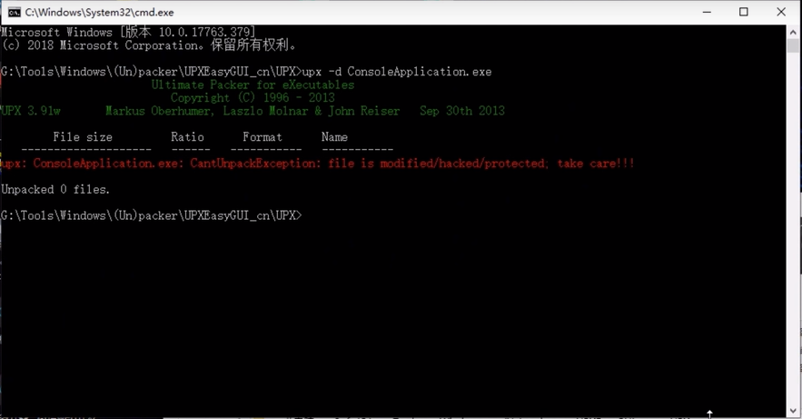
0x01 查壳
由于近年来CTF比赛中带壳的逆向题出现频率稍有增加，在静态分析之前，进行查壳是非常有必要的，常用的工具有PEID等，

进行查壳后，如果是简单且常见的壳如UPX等，那么直接可以使用工具完成脱壳，
如果一时半会找不到可用的工具，也可以尝试手工脱壳，例如ASPack工具压缩的壳就能够采用ESP定律来脱除。如果是侧重考察脱壳的题，一般程序本身就比较简单了，可以这样说，这类题如果能成功脱壳，基本上也算是做出来了。当然，脱壳并不能解决所有问题，之前有CTF比赛中甚至出现了VMP的题目，
- 与其它大部分的保护程序不同，VMProtect可修改程序的源代码 。VMProtect可将被保护文件中的部分代码转化到在虚拟机（以下称作VM）上运行的程序（以下称作bytecode）中。您同样可把VM想象为具备命令系统的虚拟处理器，该命令系统与Intel 8086处理器所使用的完全不同。
对于这种情况，还是建议使用调试器去动态调试，毕竟在逆向工程中太依赖IDA的F5功能也是不行的，还是应该锻炼自己的汇编指令阅读能力。如果是VMP比较新的版本，可能还需要使用Sharp OD等插件来隐藏调试行为。
常用脱壳方法
1 单步跟踪法
（1）用OD载入，点“不分析代码”
（2）单步向下跟踪F8，实现向下的跳。也就是说向上的跳不让其实现（通过F4）
（3）遇到程序往回跳的（包括循环），我们在下一句代码处按F4（或者右健单击代码，选择断点——>运行到所选）
（4）绿色线条表示跳转没实现，不用理会，红色线条表示跳转已经实现
（5）如果刚载入程序，在附近就有一个CALL的，我们就F7跟进去，不然程序很容易跑 飞，这样很快就能到程序的OEP
（6）在跟踪的时候，如果运行到某个CALL程序就运行的，就在这个CALL中F7进入
（7）一般有很大的跳转（大跨段），比如 jmp XXXXXX 或者 JE XXXXXX 或者有RETN 的一般很快就会到程序的OEP
注：在有些壳无法向下跟踪的时候，我们可以在附近找到没有实现的大跳转，右键–>“跟随”,然后F2下断，Shift+F9运行停在“跟随”的位置，再取消断点，继续F8单步跟踪。一般情况下可以轻松到达OEP
2 ESP定律法
ESP定理脱壳（ESP在OD的寄存器中，我们只要在命令行下ESP的硬件访问断点，就会一下来到程序的OEP了！）
（1）开始就点F8，注意观察OD右上角的寄存器中ESP有没突现（变成红色）（这只是一 般情况下，更确切的说我们选择的ESP值是关键句之后的第一个ESP值）
（2）在命令行下：dd XXXXXXXX(指在当前代码中的ESP地址，或者是hr XXXXXXXX)， 按回车
（3）选中下断的地址，断点—>硬件访—>WORD断点
（4）按一下F9运行程序，直接来到了跳转处，按下F8，到达程序OEP
3内存镜像法
（1）用OD打开软件
（2）点击选项——调试选项——异常，把里面的忽略全部√上。CTRL+F2重载下程序
（3）按ALT+M,打开内存镜象，找到程序的第一个.rsrc.按F2下断点，然后按SHIFT+F9运 行到断点，接着再按ALT+M,打开内存镜象，找到程序的第一个.rsrc.上面的.CODE（也 就是00401000处），按F2下断点。然后按SHIFT+F9（或者是在没异常情况下按F9）， 直接到达程序OEP
4 一步到达OEP
（1）开始按Ctrl+F,输入：popad（只适合少数壳，包括UPX，ASPACK壳），然后按下F2， F9运行到此处
（2）来到大跳转处，点下F8，到达OEP
5 最后一次异常法
（1）用OD打开软件
（2）点击选项——调试选项——异常，把里面的√全部去掉！CTRL+F2重载下程序
（3）一开始程序就是一个跳转，在这里我们按SHIFT+F9，直到程序运行，记下从开始按SHIFT+F9到程序运行的次数m
（4）CTRL+F2重载程序，按SHIFT+F9（这次按的次数为程序运行的次数m-1次）
（5）在OD的右下角我们看见有一个”SE 句柄”，这时我们按CTRL+G，输入SE 句柄前的地址
（6）按F2下断点，然后按SHIFT+F9来到断点处
（7）去掉断点，按F8慢慢向下走
（8）到达程序的OEP
6 模拟跟踪法
（1）先试运行，跟踪一下程序，看有没有SEH暗桩之类
（2）ALT+M打开内存镜像，找到（包含那一列中出现SFX,imports,relocations或者SFX,输 入表，重定位）
（3）若地址为00xxxxxx在命令行下输入tc eip<00xxxxxx，回车，提示正在跟踪
7 SFX法
（1）设置OD，忽略所有异常，也就是说异常选项卡里面都打上勾
（2）切换到SFX选项卡，选择“字节模式跟踪实际入口（速度非常慢）”，确定
（3）重载程序（如果跳出是否“压缩代码？”选择“否”，OD直接到达OEP）
ESP定律法
- ESP定律法是脱壳的利器，是应用频率最高的脱壳方法之一。
- 原理：ESP定律的原理在于程序中堆栈平衡的合理利用。由于在程序自解密或者自解压过程中，不少壳会先将当前寄存器内容压栈，如使用pushad，在解压结束后，会将之前的寄存器值出栈，如使用popad。因此在寄存器出栈时，往往程序代码被自动恢复，此时硬件断点触发。然后在程序当前位置，只需要少许单步跟踪，就很容易到达正确的OEP位置。
- PUSHAD指令压入32位寄存器，其入栈顺是:EAX,ECX,EDX,EBX,ESP,EBP,ESI,EDI .即把所有的寄存器都压栈。
- “堆栈平衡”原理：call命令是访问子程序的一个汇编基本指令，它先向堆栈中压入下一行程序的地址，再JMP到call的子程序地址处。与call对应的就是RETN，将当前的ESP中指向的地址出栈；JMP到这个地址。这里有一个前提：如果我们要返回父程序，则当我们在堆栈中进行堆栈的操作的时候，一定要保证在RETN这条指令之前，ESP指向的是我们压入栈中的地址。Call和retn的时候地址是对应的，这就是“堆栈平衡”。
＃＃＃ｅｓｐ定律适用范围：几乎全部的压缩壳,部分加密壳。
脱壳步骤：
- 1、单步运行，右侧寄存器ESP为红色，说明esp值改变。当前ESP为pushad压栈当前所有寄存器以后的栈顶位置。根据“堆栈平衡”原理。脱壳以后，还会在这个位置出栈。
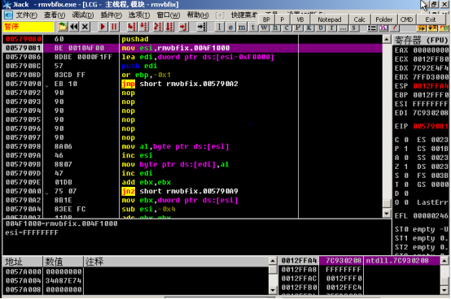 - 脱壳前寄存器值：
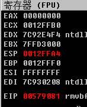
- 2、所以，我们右键esp，选择在数据窗口跟随
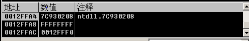
- 3、在数据窗口，我们选一个位置,右键“断点”->“硬件访问”->“Byte”设置硬件断点，然后“调试”->“硬件断点”，查看断点。
- 为什么要在这里设置断点(⊙o⊙)?因为我们可以把壳看成一个子程序，解压缩或者解密完了，它要把控制权交还给主程序。一开始pushad入栈，返回程序本身的时候要在同样的位置出栈，ESP是栈顶指针，出栈时栈顶指针和入栈时相同，而出栈时，壳的部分运行完成了，也就到了OPE附近。
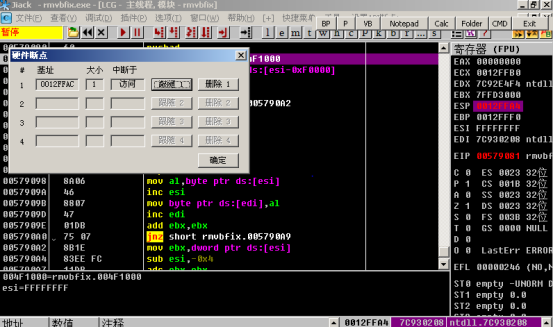
- 4、运行程序到断点处，删除断点。删除断点是因为如果硬件断点一直存在，那么程序一直跑就有可能一直断下来，很不方便。根据ESP定律，程序入口在断点附近。
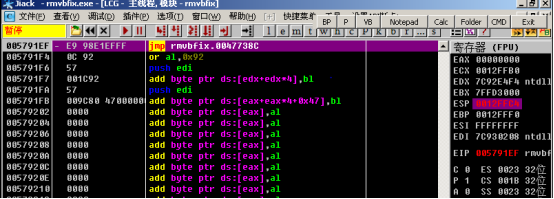
此时的寄存器，可以看到，除了EIP，其他和pushad时完全一样。
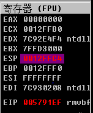5、单步运行，找到OPE
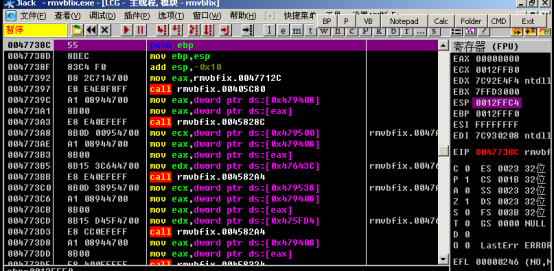6、用OllyDumpEx脱壳
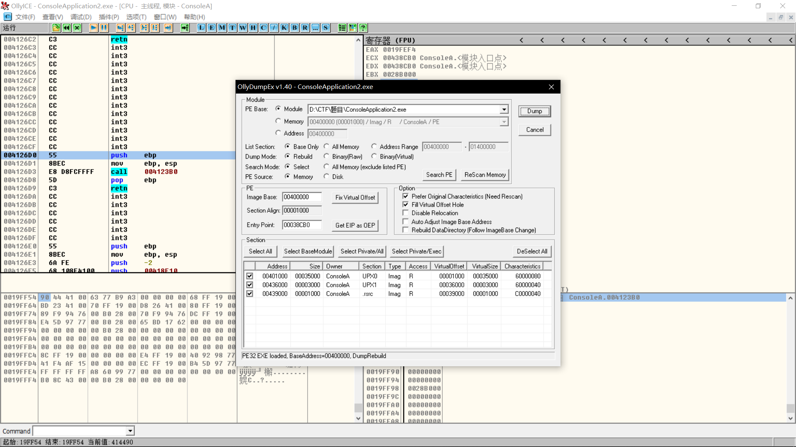
一步直达法
- 这个非常简单，但是有适用范围，适用于USP和aspack
- 原理：开头有pushad入栈，那么一定会有popad出栈，出栈时就说解压缩完成后，到达了OPE附近。
- 步骤：
- 直接搜索ＰＯＰＡＤ，然后Ｆ４，运行到ＰＯＰＡＤ
- 然后F2，F9执行到这里，来到大跳转处，到达OEP
- 即可找到ＯＰＥ
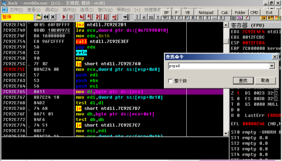
－ 注意：不要勾选整个块
－ 如图，ｊｕｍｐ过去以后就是ＯＰＥ
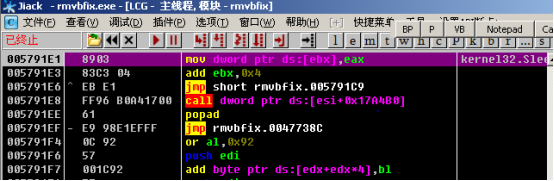
内存镜像法
步骤
依次选择OD选项（T）下的调试设置（D）子选择，弹出如下对话框，切到异常选项卡，将忽略下的子项全部勾上
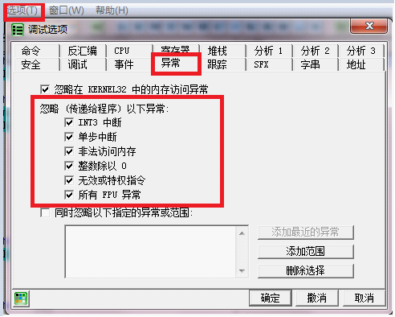
- 1、Alt+M查看内存
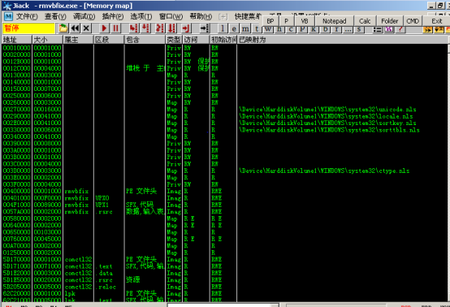 - 2、找到程序段的第一个.rsrc ,设置中断访问并运行。
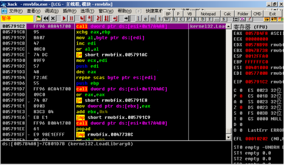 - 3、再设一次断点，运行
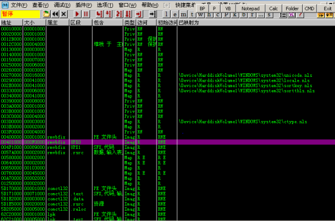 - 4、单步运行，又到了popad
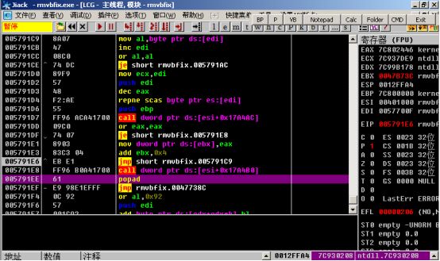 - 5、找到OPE，脱壳
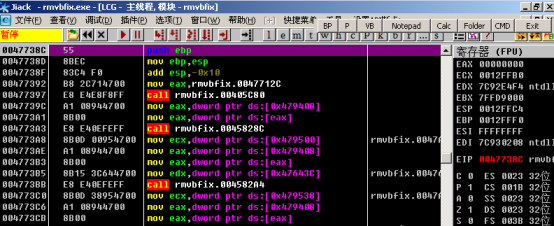
遇到的问题
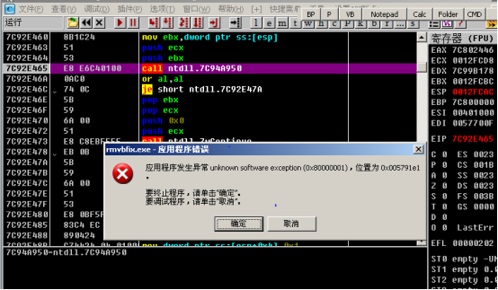
- 问题：出错，第二次设断运行后，没有删除内存断点，再单步时出错。
- 解决：出错是因为没有删除访问中断，删除访问中断就可以了。
原理
- 断点：让程序在运行时暂停到特定的代码段，下断点是调试器的功能之一，可以让程序中断在需要的地方，从而方便其分析。
- 常用的断点包括：INT3断点、硬件断点、内存断点、消息断点、条件断点等。
- 内存访问断点分为，内存访问断点和内存写入断点。
- 内存访问：代码段的代码访问内存数据。
- 内存写入：代码段的代码执行完成后把数据写入内存
- 内存访问断点：代码段的代码访问内存数据的时候，程序暂停。
- 内存写入断点：代码段的代码写入内存数据的时候，程序暂停。
- 如果给内存设内存访问断点，那么，程序就会在读取该内存数据的代码上中断。
- 比如：
寄存器间接寻址，操作数在以该寄存器中的内容为偏移地址的内存单元中，把以“ecx”值为地址的内存单元的值赋予dl，如果在地址为“ecx”值的内存下断点，那么，程序运行到这一条指令时就会中断。 - 壳在解压缩时，需要在内存读取压缩过的源代码，进行解压缩，然后再进行内存写入。
- 第一次内存断点设在资源段，假设解压顺序是先代码段，数据段，再资源段，那么。资源段发生写入中断时，程序就已经完成了代码段和数据段的解压。然后，我们在解压完成的基础上，在代码段下第二个断点，程序再次中断时，就运行到了代码段的OPE附近。
- 在第二次中断后，经过几次单步运行即可到达OPE。